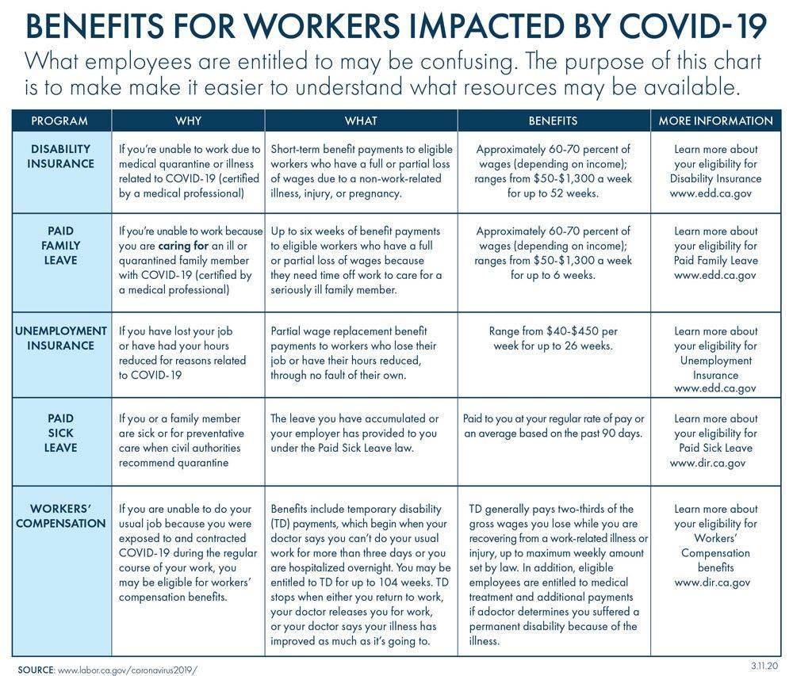
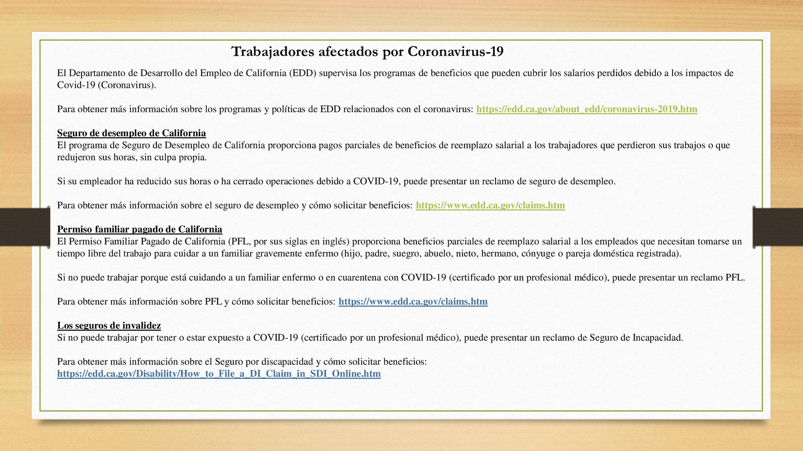

<section>
    <div class="row">
		<div class="columns small-12 hide-for-medium">
			{% include announce_menu.html %}
		</div>
		<div class="left-subnav medium-3 columns hide-for-small-only" data-sticky-container>
			<nav class="columns sticky" data-sticky data-top-anchor="positions" data-btm-anchor="clsepa" data-sticky-on="medium">
				<div id='nav-magellan' data-magellan>
					{% include announce_menu.html %}
				</div>
			</nav>
		</div>
      <div class="large-9 columns">
		<h1>Announcements</h1>
		<p>Last Updated 3/18/2020</p>

      <h3 data-magellan-target><u>Coronavirus/COVID-19 Update</u></h3>
      <div class="inner">
	  <h4 id="quick" data-magellan-target="covid">Quick Links</h4>
	   <p><a class="button button-rounded-hover" href="https://spark.adobe.com/page/KRwMK64QLdO20/?fbclid=IwAR2CXDyu1soTSLNMmEFM_w0gTEVPMz2Yi-IFku2vhTZvxv4-pvg-kdBjqfM" target="_blank">City Briefing</a> <a class="button button-rounded-hover" href="https://www.mountainview.gov/depts/manager/communityinfo/coronavirus_(covd_19)_resources.asp#eventlist" target="_blank">Updated event cancellations</a> <a class="button button-rounded-hover" href="https://www.labor.ca.gov/coronavirus2019/" target="_blank">Resources for Employers and Workers</a> <a class="button button-rounded-hover" href="https://www.cdph.ca.gov/Programs/CID/DCDC/Pages/Guidance.aspx" target="_blank">Guidance from California Department of Public Heath</a> <a class="button button-rounded-hover" href="http://www.sccphd.org/coronavirus" target="_blank">County Updates</a> <a class="button button-rounded-hover" href="https://www.sccgov.org/sites/phd/DiseaseInformation/novel-coronavirus/Pages/frequently-asked-questions.aspx" target="_blank">Shelter-in-Place FAQ</a> <a class="button button-rounded-hover" href="https://www.sba.gov/disaster-assistance/coronavirus-covid-19" target="_blank">Small Business Financial Assistance</a></p>
	   </div>
	   <hr>

      <h4 id="shelter" data-magellan-target="shelter">Shelter-in-Place Order</h4>
	  <div class="inner">
	  <p>There is a Shelter-in-Place Mandate affecting six San Francisco Bay Area counties: San Francisco, Marin, Santa Clara, San Mateo, Alameda and Contra Costa. Order starts at 12:01 a.m. Tuesday, March 17 and will be in place until at least April 7. </p>
	  <p>
	  <ul>
	  <li><a href="https://www.sccgov.org/sites/phd/news/Pages/press-release-03-16-20.aspx" target="_blank">Press Release</a></li>
	  <li><a href="https://www.sccgov.org/sites/phd/DiseaseInformation/novel-coronavirus/Pages/order-health-officer-031620.aspx" target="_blank">Shelter-at-Home Order</a></li>
	  <li><a href="https://www.sccgov.org/sites/phd/DiseaseInformation/novel-coronavirus/Pages/frequently-asked-questions.aspx" target="_blank">Frequently Asked Questions (FAQ)</a></li>
	  <li>Downloadable FAQ: <a href="https://www.sccgov.org/sites/phd/DiseaseInformation/novel-coronavirus/Documents/FAQ-Shelter-in-Place-03-16-20.pdf" target="_blank">English</a> - <a href="https://www.sccgov.org/sites/phd/DiseaseInformation/novel-coronavirus/Documents/FAQ-Shelter-in-Place-03-16-20-Spanish.pdf" target="_blank">Spanish</a> - <a href="https://www.sccgov.org/sites/phd/DiseaseInformation/novel-coronavirus/Documents/20200317_COVID19FAQVietnamese_Final.pdf" target="_blank">Vietnamese</a> - <a href="https://www.sccgov.org/sites/phd/DiseaseInformation/novel-coronavirus/Documents/20200317_COVID19FAQChinese_Final.pdf" target="_blank">Chinese</a> </li>
	  </ul>
	  </p>
	  </div>
	  <hr>	

      <h4 id="testing" data-magellan-target="testing">COVID-19 Screening and Testing Support in California</h4>
	  <div class="inner">
	  <p>Project Baseline: Google's sister company Verily, is hosting drive-thru testing at the Santa Clara County Fairgrounds. Before you visit, you must <a href="https://www.projectbaseline.com/" target="_blank">fill out the forms</a> online <b>AND</b> qualify with the associated medical questions. </p>
	  </div>
	  <hr>	

      <h4 id="workers" data-magellan-target="workers">Know Your Rights during the COVID-19 Pandemic</h4>
	  <div class="inner">
	  <p><br>Source: <a href="https://www.labor.ca.gov/coronavirus2019/" target="_blank">California Labor and Workforce Development Agency</a></p>
	  <p>If you have any questions or doubts, please call the Office of Labor Standards Enforcement (OLSE) at 1-866-870-7725. The advice line is available in 5 different languages: English, Spanish, Tagalog, Mandarin, and Vietnamese.</p>
	  <p>Información de los derechos del trabajador en respeto al COVID-19, si tiene alguna pregunta o duda por favor póngase en contacto con la Oficina de Derechos del Trabajador (OLSE en ingles) al 1-866-870-7725. La linea de consejo tiene 5 Idiomas diferentes en; español, ingles, tagalog, mandarin, y vietnamita.</p>
	  <p><br>
	  <br>
	  Credit: the <a href="https://www.facebook.com/DayWorkerCenter/" target="_blank">Mountain View Day Workers Center</a></p>
	  </div>
	  <hr>	

      <h4 id="caltrainupdates" data-magellan-target="caltrainupdates">Caltrain Updates</h4>
	  <div class="inner">
	  <p>Caltrain <a href="http://www.caltrain.com/about/MediaRelations/news/Caltrain_to_Adjust_Service_in_Response_to_Significantly_Lower_Ridership.html" target="_blank">announced Friday</a> that peak-hour service will be reduced starting Tuesday, March 17. With so many companies and businesses asking commuters to stay home, Caltrain ridership has declined dramatically. Reducing service is necessary to control costs. Caltrain does not have a dedicated source of revenue and relies on fares to cover 70% of its budget. The new schedule can be found <a href="http://www.caltrain.com/schedules/weekdaytimetable/Upcoming_Reduced_Schedule_March_17__2020.html" target="_blank">here</a>, and more information about how the system is responding to the coronavirus (COVID-19) is <a href="http://www.caltrain.com/about/MediaRelations/news/Caltrain_Updates__Novel_Coronavirus__COVID-19_.html" target="_blank">here</a>.</p>
	  </div>
	  <hr>	

      <h4 id="vtaupdates" data-magellan-target="vtaupdates">VTA Adjusts Service in Response to Coronavirus-related School Closures</h4>
	  <div class="inner">
	  <p>In light of today’s announcement from the Santa Clara County Department of Public Health to close all public schools in the county for three weeks, we will suspend <a href="https://www.vta.org/go/routes/school-trippers" target="_blank">school trip service</a> and reduce capacity on light rail vehicles, running one-car trains instead of two- and three-car trains. <b>This will take effect on Monday, March 16</b>. </p>
	  <p>To receive real-time service alerts, you can <a href="https://help.transit.app/article/96-get-notifications-about-disruptions-on-your-line" target="_blank">subscribe to your routes in the Transit app</a>. </p>
	  <p>We will continue to analyze ridership data to identify trends and will be making decisions on whether a change in the level of service is warranted and to what degree. This will be a large area of focus for VTA going forward to ensure we are responding appropriately to match our resources with the most effective level of service.</p>
	  <p>VTA continues to monitor the situation closely and maintains regular contact with local authorities and other transit agencies. For more on what VTA is doing in response to COVID-19, please visit <a href="https://www.vta.org/covid-19" target="_blank">https://www.vta.org/covid-19</a>. </p>
	  </div>
	  <hr>

      <h4 id="rent" data-magellan-target="rent">Rent Stabilization Program Service Changes due to COVID-19 (Coronavirus) Pandemic</h4>
	  <div class="inner">
	  <p>Dear City of Mountain View Community:<br>Due to the current Coronavirus pandemic, and in an effort to reduce the spread and exposure of the virus to staff and the public, the Rent Stabilization Program will be implementing an augmented service plan beginning Monday, March 16, 2020. Our office will remain open, but we are limiting in-person services until further notice. </p>
	  <p>While ensuring the continuity of services, the health and safety of the Rent Stabilization Program staff, their families, and the public we interact with, is paramount and thus the following changes in services will be effective at least until April 6, 2020:
	  <ul>
	  <li>No in-person appointments or walk-ins will be offered during this augmented service period. Staff members will remain available to assist members of the public by phone (650) 282-2514 and email csfra@housing.org during normal Rent Stabilization Program office hours (Monday - Friday, 9 AM-5 PM)</li>
	  <li>All scheduled in-person appointments will be rescheduled as phone appointments </li>
	  <li>All pending Rent Adjustment Petition hearings and all mediations will be postponed and rescheduled for after the augmented service period </li>
	  <li>All workshops and clinics will be postponed until after the emergency declaration is lifted </li>
	  </ul>
	  </p>
	  <p>Please visit our website to stay updated on service changes and modifications to programming. </p>
	  <p>We apologize for any inconvenience this may cause. While we remain dedicated to the Mountain View community, the safety of our staff and the public are priority. Should you have any questions or concerns, please do not hesitate to contact our office. For further information about the Coronavirus and/or COVID-19, please see the California Department of Public Health Guidelines. </p>
	  <p>Sincerely, <br>City of Mountain View Rent Stabilization Program <br>(650) 282-2514 <br><a href="https://mountainview.gov/rentstabilization" target="_blank">mountainview.gov/rentstabilization</a> <br><a href="mailto:csfra@housing.org" target="_blank">csfra@housing.org</a>  </p>
	  </div>
	  <hr>
 
      <h4 id="parents" data-magellan-target="parents">Resources for Parents</h4>
	  <div class="inner">
	  <p><b>School lunches.</b> Starting March 18, Mountain View Whisman School Superintendent Ayinde Rudolph announced that <a href="https://www.mvwsd.org/about/communications/news___events/free_meals_during_school_closure" target="_blank">any child under the age of 18 will be able to receive a free breakfast</a> and lunch at Gabriela Mistral Elementary School, located at 505 Escuela Avenue. Rudolph also noted that parents can get laptops and internet vouchers from the district office, and anyone who needs an option grade level instructor packet can go to any school or retrieve one from the district <a href="https://www.mvwsd.org/" target="_blank">website</a>. </p>
	  <ul>
	  <li><a href="https://techfortomorrow.com/virtual-field-trip/" target="_blank">Virtual Field Trip</a>  </li>
	  <li><a href="https://kidsactivitiesblog.com/135609/list-of-education-companies-offering-free-subscriptions" target="_blank">List of Education Companies offering free subscriptions due to school closings</a> </li>
	  <li><a href="https://www.lifewire.com/best-educational-youtube-channels-for-kids-4176195" target="_blank">The 21 Best Educational YouTube Channels for Kids</a></li>
	  <li><a href="https://ca.responsiblehomeschooling.org/" target="_blank">Resources from the California Coalition for Responsible Home Education</a></li>
	  </ul>
	  </div>
	  <hr>
	  
      <h4 id="other" data-magellan-target="other">Other Resources</h4>
	  <div class="inner">
	  <p>
	  <ul>
	  <li>If there are <b>folks over 60</b> who are needing meal delivery, <b>Meals on Wheels</b> is increasing its capacity. They provide meals and grocery items for folks over 60 who cannot shop for themselves.  <a href="https://www.sccgov.org/sites/ssa/daas/snp/Pages/hdm.aspx" target="_blank">More information here</a> or by calling (408) 350-3246. </li>
	  <li><b>Price Gouging Consumer Alert</b> <br>Price gouging (of certain items and services) during a state of emergency is illegal in California. You can report price gouging online at: <a href="https://oag.ca.gov/contact/consumer-complaint-against-business-or-company" target="_blank">https://oag.ca.gov/contact/consumer-complaint-against-business-or-company</a> or Call: (800)952-5225 </li>
	  <li>South Bay Mutual Aid: Ask for help in <a href="https://bit.ly/sbma-intake" target="_blank">English</a> or <a href="https://bit.ly/sbma-intake-S" TARGET="_blank">Spanish</a></li>
	  <li>CSA will be making temporary changes to their programs. <a href="pdf/csa-updated.pdf" target="_blank">View changes</a>.<br>For more information: (650) 968-0836 </li>
	  <li>There are opportunities for folks to get <b>public support for lost pay</b> from various government programs. The County is running a multi-lingual hotline on this, <a href="https://www.sccgov.org/sites/olse/Pages/home.aspx" target="_blank">more information here</a>.</li>
	  <li>The Mountain View Community Shuttle is still running. <a href="http://mvcommunityshuttle.com/" target="_blank">See schedule</a></li>
	  <li>Crisis Counselors to help cope with coronavirus anxiety: Text RENEW to 741741</li>
	  <li>Worried about having to self-isolate in a dangerous home situation? Please reach out to the National Domestic Violence Hotline: 
	  <ul>
	  <li>Call: 1-800-799-7233</li>
	  <li>TTY: 1-800-787-3224</li>
	  <li>Text LOVEIS to 22522</li>
	  <li>Chat at <a href="https://www.thehotline.org/" target="_blank">thehotline.org</a></li>
	  </ul>
	  </li>
	  <li><a href="http://www.chambermv.org/restaurants-offering-takeout/delivery" target="_blank">Mountain View Restaurants Offering Takeout or Delivery</a> </li>
	  <li>Here's a <a href="https://thesixfifty.com/a-running-list-of-6-5-0-area-code-restaurants-offering-food-for-pickup-or-delivery-1e1cb3e110d6" target="_blank">running list of 6-5-0 area code restaurants</a> offering food for pickup or delivery. </li>
	  </ul>
	  </p>
	  </div>
	  <hr>

      <h4 id="tips" data-magellan-target="tips">Tips to Stay Healthy</h4>
	  <div class="inner">
	  <p>The County would like to acknowledge that as new directives and updates are being provided by our health officials about COVID-19, a natural reaction may be to worry, which may leave us feeling vulnerable and helpless. In addition to following the advice and orders of our Public Health Officer, here are some tips to help you practice self-care during this time: ​</p>
	  <p>
	  <ol>
	  <li><b>Healthy habits.</b> While this may seem simple, any health care provider will tell you that getting good sleep, eating healthy, drinking plenty of water and exercising regularly can help boost your immune system. Consider our Public Health Officer’s guidance and practice social distancing while taking care of your physical and mental health.</li>
	  <li>Digital detox. Continuous watching or listening to media reports, reading online news or social media can lead to unintended fear and anxiety. Try to limit your intake of news to a couple of key reliable sources and remember to check our <a href="https://www.sccgov.org/sites/phd/DiseaseInformation/novel-coronavirus/Pages/home.aspx" target="_blank">Public Health Department</a> and the <a href="https://www.cdc.gov" target="_blank">Centers for Disease Control and Prevention</a> websites for key COVID-19 updates. </li>
	  <li><b>Mindfulness.</b> Being present and living in the moment can help you reduce anxiety. If you need help calming your mind, try listening to mindfulness apps or listening to visualization resources. And, remember to access your health plan’s mental health and behavioral health services if you start to feel overwhelmed. Mental health and behavioral health providers are essential services.</li>
	  <li><b>Hand awareness.</b> In addition to frequent <a href="https://www.cdc.gov/handwashing/when-how-handwashing.html" target="_blank">proper handwashing</a>, <a href="https://www.youtube.com/watch?v=MC5W4yMCcdo&feature=youtu.be" target="_blank">be aware of what you touch</a>, and <a href="https://www.cdc.gov/coronavirus/2019-ncov/prepare/cleaning-disinfection.html?CDC_AA_refVal=https%3A%2F%2Fwww.cdc.gov%2Fcoronavirus%2F2019-ncov%2Fcommunity%2Fhome%2Fcleaning-disinfection.html" target="_blank">clean and disinfect</a> throughout the day since your hands are a key way germs get into our body. </li>
		<li><b>Normalize new salutations.</b> Elbow bumps, a head nod, a virtual high five or a nice smile are the new ways to greet others without having to shake hands. Give it a try and others will appreciate your thoughtfulness. </li>
		</ol>
		</p>
		<p>While this is not meant to be an all-inclusive list, these tips will hopefully provide some actions you can control during this time.​ </p>
	  </div>
	  <hr>	
	  
      <h4 id="help" data-magellan-target="help">Ways to Help</h4>
	  <div class="inner">
	  <ul>
	  <li>If you have some tech skills, check out the <a href="https://coronavirustechhandbook.com" target="_blank">Coronavirus Tech Handbook</a> with resources aplenty for creating tools to help combat the #COVIDー19 pandemic. </li>
	  <li><a href="https://sacredheartcs.org/2020/03/a-time-of-particular-need/" target="_blank">Volunteer with Sacred Heart</a></li>
	  <li><a href="https://www.siliconvalleycf.org/coronavirus-fund" target="_blank">Donate to Silicon Valley Community Foundation</a></li>
	  <li><a href="https://www.shfb.org/give-help/volunteer/" target="_blank">Volunteer with Second Harvest Food Bank</a></li>
	  <li>Volunteer with South Bay Mutual Aid - <a href="https://bit.ly/sbma-volunteer" target="_blank">English</a> / <a href="https://bit.ly/sbma-volunteer-s" target="_blank">Spanish</a></li>
	  <li><a href="https://losaltoscf.org/blog/los-altos-community-foundation-announces-2020-nonprofit-relief-fund/" target="_blank">Los Altos Community Foundation 2020 Nonprofit Relief Fund </a></li>
	  <li>The Health Trust
	  <ul>
	  <li>To volunteer, please <a href="https://healthtrust.org/individual-opportunities/" target="_blank">sign-up</a></li>
	  <li>To <a href="https://healthtrust.org/donate" target="_blank">donate</a></li>
	  </ul>
	  </li>
	  <li>Donate Blood: Schedule an appointment with the <a href="https://www.redcrossblood.org" target="_blank">American Red Cross</a>.</li>
	  </ul>
	  </div>
	  <hr>

      <h4 id="vta" data-magellan-target="vta">VTA is seeking transit rider input!</h4>
      <div class="inner">
          <p>VTA's Better Bus Stops Program is a new annual program to improve bus stops throughout VTA's network. </p>
		  <p>Every bus trip begins with some time waiting for the bus to arrive. In order to promote transit as a viable and attractive transportation option, the quality of the passenger waiting environment is an important component of the overall transit experience. Enhanced amenities include pavement work, shelters, benches, trash receptacles, signage, lighting and in future cycles, real-time information. </p>
		  <p><a href="https://www.vta.org/projects/better-bus-stops" target="_balnk">Take the Rider Survey here</a> 
		  </p>
	  </div>
	  <hr>		

	
		<h4 id="neighborhood">Neighborhood Grants Available</h4>
		<p>The application period for the 2020-2021 Neighborhood Grant is now open. Linked below are the documents for the grant application process. This information is also available on the <a href="https://www.mountainview.gov/depts/comdev/preservation/programs/cnc/grantprogram.asp" target="_blank">Neighborhood Grant Program Webpage</a>.</p>
		<p><b>This year’s deadline for grant applications has been extended to April 10, 2020 by 5pm.</b> </p>
		<p>If you know of a former neighborhood group that can be revitalized or a new group interested in forming, please help the City recruit and pass this grant application information along. Representatives are also invited to the Networking Event Dinner on Thursday, April 30, 2019 to learn more about other groups and neighborhood activities. </p>
		<p>Note: RSVPs are still being accepted. Should a cancellation occur, city staff will notify you accordingly. </p>
		<p><a class="button button-rounded-hover" href="https://files.constantcontact.com/010d49f3601/fc16f9b4-1cfc-42cd-bfc1-735598d0dc31.pdf" target="_blank">Neighborhood Grant Application</a> <a class="button button-rounded-hover" href="https://files.constantcontact.com/010d49f3601/5a753133-faa4-4ade-b13b-5c2a09fb94f7.pdf" target="_blank">Neighborhood Grant Guidelines</a></p>
		<p> </p>
		<hr>

		<h4 id="jury">Court Seeks Candidates for Public Watchdog Agency</h4>
		<p><b>Recruitment begins for 2020-2021 Civil Grand Jury panel</b></p>
		<p>SAN JOSÉ, California (January 2, 2020): Presiding Judge Deborah A. Ryan has announced that the Superior Court of California, County of Santa Clara, is seeking volunteers to serve on the 2020-2021 Civil Grand Jury. </p>
		<p>The Civil Grand Jury, an arm of the Superior Court, is a part of the judicial branch of government.  It serves as the county’s civil watchdog agency and may examine all aspects of county and city government, special districts, and school districts.  It is authorized to inspect and audit books, records, and financial expenditures, to ensure accountability of public funds.   The Grand Jury may also inspect jails and juvenile detention facilities. </p>
		<p>Grand Jury service affords citizens the unique opportunity to contribute to the efficiency of local government and to play an integral part in ensuring that government officials are accountable to residents. </p>
		<p>Applicants must be 18 years of age or older, United States citizens, and residents of Santa Clara County. Service on the Grand Jury does require a time commitment of an average of 25 hours per week, or as determined by the Grand Jury. Candidates must be willing to dedicate this year of service to keep careful watch over various aspects of County government, and the one-year term of the 2020-2021 panel will begin on June 18, 2020. </p>
		<p>Persons interested in applying may obtain an application online at <a href="https://www.scscourt.org" target="_blank">www.scscourt.org</a> under “Civil Grand Jury”. Questions about informational events or about the Grand Jury may be directed to <a href="mailto:CGJ@scscourt.org" target="_blank">CGJ@scscourt.org</a> or by contacting Britney Huelbig, Deputy Manager for the Civil Grand Jury, at <a href="tel:4088822721" target="_blank">408-882-2721</a>. </p>
		<p><b>The deadline to submit applications is April 1, 2020. </b></p>
		<hr>

		<h4 id="caltrain">Caltrain Electrification</h4>
		<p>In Summer 2018, Caltrain began performing work along the railroad corridor in Mountain View. </p>
		<p>The activities during this time included locating underground utilities, testing soil conditions, inspecting signal/communication equipment, potholing, and pruning/removing trees in preparation for the installation and operation of the Overhead Contact System that will power electric trains. </p>
		<p>Caltrain crews will be extending the existing set-out track approximately 500 feet in order to accommodate on-track equipment required for Caltrain Electrification.  The current set-out track is between Farley Street and South Shoreline Boulevard in Mountain View.  Construction will require a staging area for foundation installation, pole installation, construction material and pole delivery and storage as well as for loading and unloading of train cars. The loading and unloading of construction train cars and equipment will require the use of trucks, loading of construction trains and occasional use of backup alarms. Staging is expected to begin in October 2019 with construction occurring over a 8-12 month period. </p>
		<p>Vehicles will enter the staging area off of Central Expressway at Farley Street.  Egress will occur south of South Shoreline Boulevard back onto the Central Expressway. </p>.
		<h5>CONSTRUCTION AREA MAP</h5>
		<br>
		<hr>

		<h4 id="green">Mountain View Green Building and Reach Codes FAQ</h4>
		<p>The City’s Community Development Department has created a new webpage to provide information regarding the recently adopted Reach Codes. </p>
		<p>Information regarding the City’s Amended Green Building Codes (MVGBC) and Reach Code: 
		<ul>
		<li><a href="https://tinyurl.com/wxrbwnh" target="_blank">https://tinyurl.com/wxrbwnh</a> </li>
		<li><a href="https://tinyurl.com/vgl56cj" target="_blank">https://tinyurl.com/vgl56cj</a> </li>
		</ul>
		</p>
		<hr>

		<h4 id="stateleg">New State Legislation</h4>
		<p>The California state legislature has adopted several bills that went into effect on January 1, 2020. A nice summary of several new laws is <a href="https://laist.com/2019/12/27/californias_new_laws_starting_jan_1_2020.php" target="_blank">available here</a>. </p>
		<p>Many of these laws are quite consequential, but particularly noteworthy are AB 1482 and SB 329. AB 1482 enacts a statewide rent cap (allowing annual rent increases no greater than 5% plus inflation) and prohibits landlords from evicting tenants without just cause. <b>It is important to keep in mind that the state law allow cities to enact stronger renter protections.</b> Renters in the City of Mountain View are protected by the Community Stabilization and Fair Rent Act (CSFRA), also known as Measure V. <a href="https://www.mountainview.gov/depts/comdev/preservation/rentstabilization/default.asp" target="_blank">More information about CSFRA is available here.</a> </p>
		<p>SB 329 prohibits discrimination against tenants with housing vouchers.</p>
		<hr>
		
      </div>
    </div>
</section>
